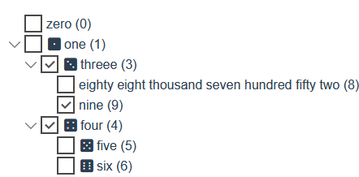
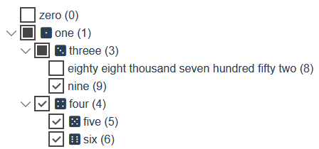
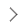

| Name | Type | Default | Description |
|---|---|---|---|
| autoSort | Boolean | false | If true then turns on auto-sorting whenever node collection is changed |
| canDelete | Boolean | false | Allows to delete a selected node by using the Del key |
| canEdit | Boolean | false | Allows to edit a selected node caption See below |
| checkMode | String | ‘independent’ | Multiselection mode for checkboxes. Can be either independent or linked. See below |
| checkOnSelect | Boolean | false | If true when a node is selected it is also checked |
| childrenProp | String | ‘children’ | Indicates a prop in items that contains an array of an underlying items. |
| hideEmptyIcon | Boolean | true | Allows to collapse the space occupied by an empty icon before a node caption |
| icons | Object | icons.defaultIcons | Contains classes for different node states. See below |
| idProp | String | ‘id’ | Indicates a prop that uniquely identifies every node. See below |
| nameProp | String | Function | ‘name’ | Indicates a prop or a function that will be used to show the node caption. See below |
| notFoundText | String | ‘no nodes are found’ | Indicates a text that will be shown when after node filtering no nodes ae shown. See filtering |
| openOnSelect | Boolean | false | If true when a node is selected it is also will be open |
| showCheckbox | Boolean | true | Allows to turn on multiselection mode by showing checkboxes for every node |
| showIcon | Boolean | false | Allows to show icons for every node. See below |
| sortComparator | Function | String.prototype.localeCompare | Function that is used to sort nodes by their captions. See sort |
| styleClasses | Object | Contains classes for different visual node parts. See below | |
| styleClasses.checkbox | String | Object | null | Contains class(es) that is added to node checkbox classes. See below |
| styleClasses.expander | String | Object | null | Contains class(es) that is added to node expander classes. See below |
| styleClasses.icon | String | Object | null | Contains class(es) that is added to node icon classes. See below |
| styleClasses.text | String | Object | null | Contains class(es) that is added to node text classes. See below |
The edit mode are turned on by setting options.canEdit=true. To start editing a selected node press the F2 key or perform double-click on the node caption.
To save changes and exit the mode press Enter.
To cancel editing without saving changes press Esc.
independent modeIn this mode all the nodes have two check states: checked and unchecked.
Checking/unchecking a node does not affect the check state of its parent or child nodes.

linked modeIn this mode all the nodes have three check states: checked, unchecked and indeterminate.
Checking/unchecking a node affects the check state of its parent and/or child nodes. If some but not all child nodes are checked then their parent node is in indeterminate check state and this state looks different than the checked and unchecked states.
The mode has the following behaviour:
checked or indeterminate (see above)unchecked or indeterminate (see above)
options.icons has the following state icons than contains icon classes:
closedIcon: icon classes for the indication of the closed node state: treevue-default-arrow openIcon: icon classes for the indication of the open node state treevue-default-arrow expanded uncheckedIcon: icon classes for the indication of the unchecked node state treevue-default-checkbox checkedIcon: icon classes for the indication of the checked node state treevue-default-checkbox checked partiallyCheckedIcon: icon classes for the indication of the indeterminate node state treevue-default-checkbox indeterminate The above icon classes are default icons classed for the component.
If you use Fontawesome icons in your application you can switch node state icons to fontawesome icons:
1 | <template> |
To allow the access to every node all of them must be identified by some unique prop value. If source items do not have such unique prop for every node then the component can assign unique identifiers to all the nodes itself. By default options.idProp='id'. You can customize what exact prop to use as a prop with unique values by setting options.idProp equal to desired prop. If you wish the component to assign identifiers automatically than just set options.idProp to null.
The visible node text in the component is a node caption. This caption is determined by options.nameProp that can be either string (name of the prop in the source item) or a function that has one parameter item (source item) and must return the node caption. By default options.nameProp='name'. You can customize what exact prop to use as the caption prop by setting options.nameProp equal to a desired prop or a function.
The example of using a function for returning the node caption:
1 | this.$refs.treeVue.treeOptions.nameProp = item => item.title |
Every node has four main parts: checkbox, expander, icon, text. Every part can have its own set of style classes. You can either set those classes for all the nodes by setting the corresponding props in options.styleClasses.options.styleClasses has the following props than can contain style classes:
checkbox: classes that are added to classes of the node checkbox component, default value is nullexpander: classes that are added to classes of the node expander component, default value is nullicon: classes that are added to classes of the node icon component, default value is nulltext: classes that are added to classes of the node text component, default value is nullEvery node can override this classes by setting its own classes for all the node parts and also can have default style that applies to all its parts:
default: classes that are added to classes of all the node subcomponents, default value is nullcheckbox: classes that are added to classes of the node checkbox component, default value is nullexpander: classes that are added to classes of the node expander component, default value is nullicon: classes that are added to classes of the node icon component, default value is nulltext: classes that are added to classes of the node text component, default value is nullTo override node classes you can call the corresponding node’s functions. See node functions
Any style classes must be set by string or an object in the Vue.js style:
string classes: ‘class1 class2 class3’
object classes:
1 | { |